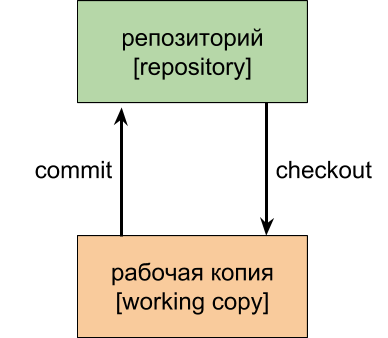

Система контроля версий (Version Control System, VCS) представляет собой программное обеспечение, которое позволяет отслеживать изменения в документах, при необходимости производить их откат, определять, кто и когда внес исправления и т.п.
Git – распределенная система контроля версий, разработанная Линусом Торвальдсем для работы над ядром операционной системы Linux. Среди крупных проектов, в рамках которых используется git, можно выделить ядро Linux, Qt, Android. Git свободен и распространяется под лицензией GNU GPL 2 и, также как Mercurial, доступен практически на всех операционных системах.
Архитектура трех деревьев Система контроля версий git имеет архитектуру трех деревьев. Перед тем как перейти к ее описанию, для начала, рассмотрим архитектуру двух деревьев. Схематично она выглядит так, как представлено на рисунке ниже.
Репозиторий – это хранилище для нашего проекта, которое обслуживает система контроля версий. Сама операция отправки изменений называется commit, на русском языке ее так и называют – коммит. Если нам необходимо взять данные из репозитория, то мы осуществляем операцию checkout, которая на русском произносится как чекаут. Для названий операций commit и checkout не используют прямой перевод, предпочитают транскрипцию.
$ git checkout [имя ветки] Переключается на выбранную ветку и
обновляет рабочую директорию до её состояния
$ git push [удалённый репозиторий] [ветка] Загружает все изменения
локальной ветки в удалённый репозиторий
$ git pull Загружает историю из удалённого репозитория и объединяет её
с локальной. pull = fetch + merge